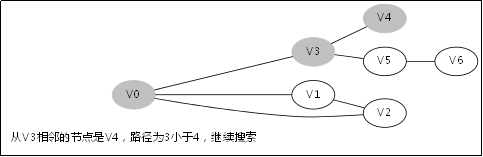

深度优先搜索(DFS)
【算法入门】
1.前言
深度优先搜索（缩写DFS）有点类似广度优先搜索，也是对一个连通图进行遍历的算法。它的思想是
从一个顶点V0开始，沿着一条路一直走到底，如果发现不能到达目标解，那就返回到上一个节点，然后从另一条路开始走到底
，这种尽量往深处走的概念即是深度优先的概念。
2.深度优先搜索VS广度优先搜索
2.1演示深度优先搜索的过程
还是引用上篇文章的样例图，起点仍然是V0，我们修改一下题目意思，只需要让你找出一条V0到V6的道路，而无需最短路。

图2-1 寻找V0到V6的一条路（无需最短路径）
假设按照以下的顺序来搜索：
1.V0->V1->V4，此时到底尽头，仍然到不了V6，于是原路返回到V1去搜索其他路径；
2.返回到V1后既搜索V2，于是搜索路径是V0->V1->V2->V6,，找到目标节点，返回有解。
这样搜索只是2步就到达了，但是如果用BFS的话就需要多几步。
2.2深度与广度的比较
（你可以跳过这一节先看第三节，重点在第三节）
从上一篇《【算法入门】广度/宽度优先搜索(BFS)》中知道，我们搜索一个图是按照树的层次来搜索的。
我们假设一个节点衍生出来的相邻节点平均的个数是N个，那么当起点开始搜索的时候，队列有一个节点，当起点拿出来后，把它相邻的节点放进去，那么队列就有N个节点，当下一层的搜索中再加入元素到队列的时候，节点数达到了N2，你可以想想，一旦N是一个比较大的数的时候，这个树的层次又比较深，那这个队列就得需要很大的内存空间了。
于是广度优先搜索的缺点出来了：在树的层次较深&子节点数较多的情况下，消耗内存十分严重。广度优先搜索适用于节点的子节点数量不多，并且树的层次不会太深的情况。
那么深度优先就可以克服这个缺点，因为每次搜的过程，每一层只需维护一个节点。但回过头想想，广度优先能够找到最短路径，那深度优先能否找到呢？深度优先的方法是一条路走到黑，那显然无法知道这条路是不是最短的，所以你还得继续走别的路去判断是否是最短路？
于是深度优先搜索的缺点也出来了：难以寻找最优解，仅仅只能寻找有解。其优点就是内存消耗小，克服了刚刚说的广度优先搜索的缺点。
3.深度优先搜索
3.1.举例
给出如图3-1所示的图，求图中的V0出发，是否存在一条路径长度为4的搜索路径。
图3-1
显然，我们知道是有这样一个解的：V0->V3->V5->V6。
3.2.处理过程

3.3.DFS函数的调用堆栈
此后堆栈调用返回到V0那一层，因为V1那一层也找不到跟V1的相邻未访问节点

此后堆栈调用返回到V3那一层
此后堆栈调用返回到主函数调用DFS(V0,0)的地方，因为已经找到解，无需再从别的节点去搜别的路径了。
4.核心代码
这里先给出DFS的核心代码。
/** * DFS核心伪代码 * 前置条件是visit数组全部设置成false * @param n 当前开始搜索的节点 * @param d 当前到达的深度 * @return 是否有解 */ bool DFS(Node n, int d){ if (isEnd(n, d)){//一旦搜索深度到达一个结束状态，就返回true return true; } for (Node nextNode in n){//遍历n相邻的节点nextNode if (!visit[nextNode]){// visit[nextNode] = true;//在下一步搜索中，nextNode不能再次出现 if (DFS(nextNode, d+1)){//如果搜索出有解 //做些其他事情，例如记录结果深度等 return true; } //重新设置成false，因为它有可能出现在下一次搜索的别的路径中 visit[nextNode] = false; } } return false;//本次搜索无解 }
当然了，这里的visit数组不一定是必须的，在一会我给出的24点例子中，我们可以看到这点，这里visit的存在只是为了保证记录节点不被重新访问，也可以有其他方式来表达的，这里只给出核心思想。
深度优先搜索的算法需要你对递归有一定的认识，重要的思想就是：抽象！
可以从DFS函数里边看到，DFS里边永远只处理当前状态节点n，而不去关注它的下一个状态。
它通过把DFS方法抽象，整个逻辑就变得十分的清晰，这就是递归之美。
5.另一个例子：24点
5.1.题目描述
想必大家都玩过一个游戏，叫做“24点”：给出4个整数，要求用加减乘除4个运算使其运算结果变成24，4个数字要不重复的用到计算中。
例如给出4个数：1、2、3、4。我可以用以下运算得到结果24：
1*2*3*4 = 24；2*3*4/1 = 24；(1+2+3)*4=24；……
如上，是有很多种组合方式使得他们变成24的，当然也有无法得到结果的4个数，例如：1、1、1、1。
现在我给你这样4个数，你能告诉我它们能够通过一定的运算组合之后变成24吗？这里我给出约束：数字之间的除法中不得出现小数，例如原本我们可以1/4=0.25，但是这里的约束指定了这样操作是不合法的。
5.2.解法：搜索树
这里为了方便叙述，我假设现在只有3个数，只允许加法减法运算。我绘制了如图5-1的搜索树。
图5-1
此处只有3个数并且只有加减法，所以第二层的节点最多就6个，如果是给你4个数并且有加减乘除，那么第二层的节点就会比较多了，当延伸到第三层的时候节点数就比较多了，使用BFS的缺点就暴露了，需要很大的空间去维护那个队列。而你看这个搜索树，其实第一层是3个数，到了第二层就变成2个数了，也就是递归深度其实不会超过3层，所以采用DFS来做会更合理，平均效率要比BFS快（我没写代码验证过，读者自行验证）。
6.OJ题目
题目分类来自网络：
sicily：1019 1024 1034 1050 1052 1153 1171 1187
pku：1088 1176 1321 1416 1564 1753 2492 3083 3411
7.总结
DFS适合此类题目：给定初始状态跟目标状态，要求判断从初始状态到目标状态是否有解。
8.扩展
不知道你注意到没，在深度/广度搜索的过程中，其实相邻节点的加入如果是有一定策略的话，对算法的效率是有很大影响的，你可以做一下简单马周游跟马周游这两个题，你就有所体会，你会发现你在搜索的过程中，用一定策略去访问相邻节点会提升很大的效率。
这些运用到的贪心的思想，你可以再看看启发式搜索的算法，例如A*算法等。
=========================================================
出处：raphealguo@CSDN